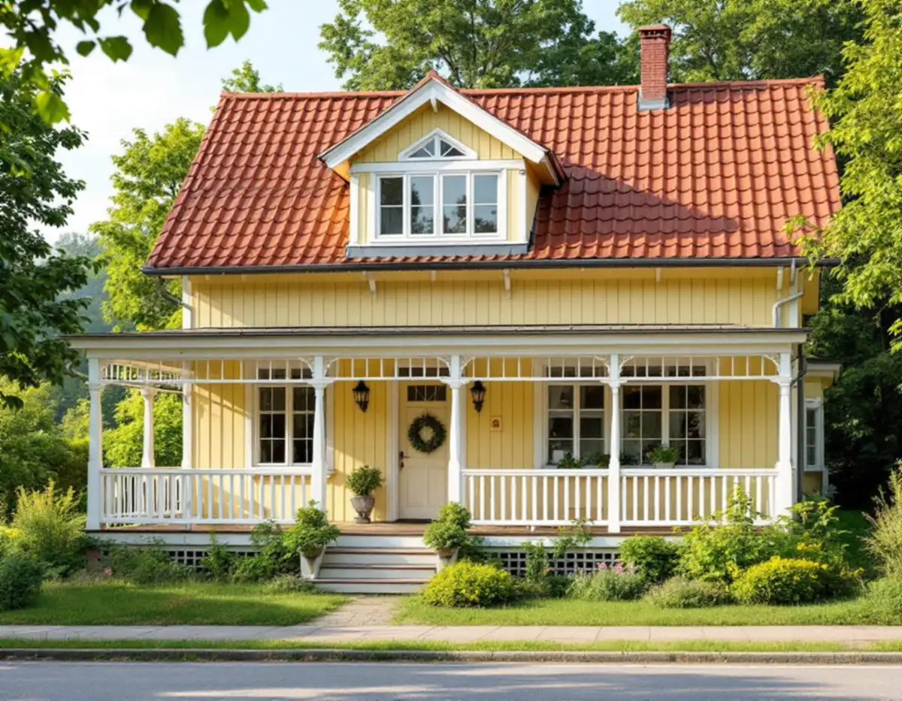
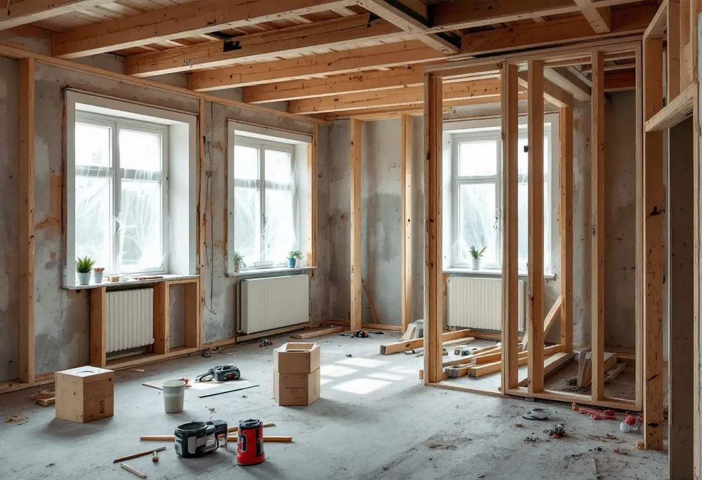
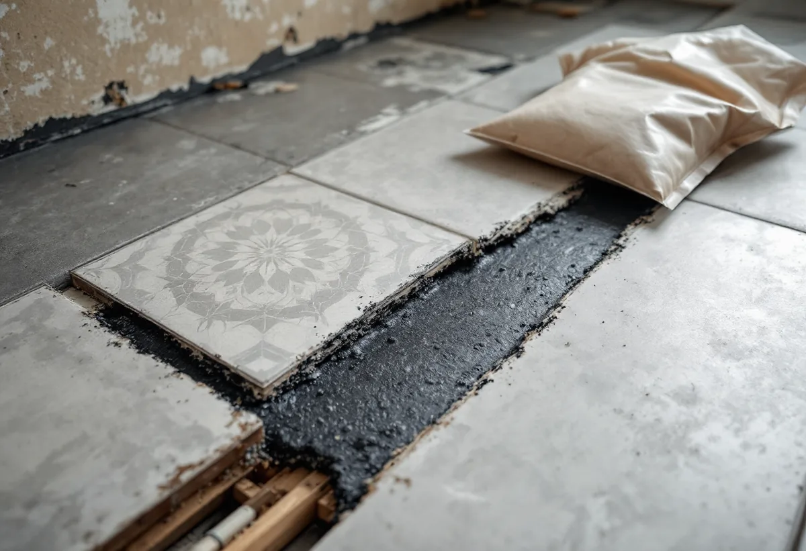

Platsbesök
Gratis besök där vi går igenom hela villan eller lägenheten.
I Hägersten ligger villastaden Mälarhöjden och flerbostadshusen på Hägerstensåsen nära varandra, och en totalrenovering ser helt olika ut i de två. Geal Entreprenad AB renoverar hela villan eller lägenheten i en sammanhållen entreprenad och reder ut vad som kräver anmälan, lov eller föreningens tillstånd.

Stadens områdesfakta för 2025 visar skillnaden tydligt. I Mälarhöjden fanns 1 507 bostäder, och 1 086 av dem låg i småhus – 988 med äganderätt. På Hägerstensåsen fanns 4 904 bostäder, nästan alla i flerbostadshus: 2 034 bostadsrätter och 2 657 hyresrätter hos privata värdar.
För en totalrenovering betyder det att två grannområden har helt olika regler att förhålla sig till. I villan är det du som fastighetsägare som ansvarar för att lagens krav uppfylls. I bostadsrätten är det föreningen som äger huset, och mycket av det du vill göra kräver styrelsens tillstånd innan något annat.

Stadens vägledning Varsam utveckling av småhus- och villaområden beskriver hur villasamhällen som Mälarhöjden växte fram efter privata initiativ genom större markförvärv. Husen är individuellt utformade, trä är det vanligaste fasadmaterialet, och glasverandor, takkupor och snickarglädje ger området dess variation. I vägledningens tabell står Mälarhöjden som kulturhistoriskt värdefull miljö.
En totalrenovering inomhus kräver sällan bygglov, men varsamhetskravet gäller ändå. Ska fönster, verandor eller fasadmaterial bytas samtidigt räcker det inte att åtgärden är lovfri på ett vanligt småhus: i en miljö som Stadsmuseets karta markerar som värdefull kan bygglov krävas ändå. Vi slår upp fastigheten innan vi planerar det som syns utifrån.
Stockholms stad skriver att du inte behöver göra någon anmälan om du ändrar planlösningen inom en lägenhet och inga tekniska egenskapskrav påverkas – till exempel om du flyttar eller bygger ut kök eller badrum. Påverkas bärande konstruktion, brandskydd eller ventilation, eller tillkommer en ny VA-stam i ett nytt schakt, krävs anmälan och startbesked.
Staden påminner också om att en hyresgäst normalt inte får göra sådana ändringar, och att du i en bostadsrätt behöver föreningens tillstånd. Ska köket flyttas och badrummets kanal användas som kombinerad imkanal måste kanalens mått räcka, och staden råder dig att tidigt rådgöra med sotaren. Vi tar fram det underlag som styrelsen behöver innan vi bokar in arbetet.
Boverket skriver att asbest förbjöds inom byggsektorn 1982, men att stora mängder finns kvar i byggnader. Det är främst hus som byggdes mellan 1940 och 1970 som innehåller asbest, men den kan finnas även i äldre hus. Så länge den är inkapslad är den ingen fara – det är när materialet bearbetas och dammar som fibrerna blir farliga.
Inför en totalrenovering i Hägersten tar vi därför reda på husets byggår och tidigare renoveringar och låter ta prover på de material som kan innehålla asbest. Det som innehåller asbest saneras innan rivningen fortsätter. Läs mer om enskilda rum under badrumsrenovering i Hägersten och köksrenovering i Hägersten.

Gratis besök där vi går igenom hela villan eller lägenheten.
Föreningens tillstånd, anmälan och eventuellt lov reds ut.
Misstänkt asbest provas innan något rivs.
Sanering och rivning i rätt ordning.
El, VVS och ventilation byggs om.
Golv, väggar, kök och bad, sedan gemensam besiktning.
I ett småhus räknar Skatteverket bland annat rivning av väggar, ny planlösning, tilläggsisolering, kakel och klinker och andra förbättringsarbeten som rotarbete. Avdraget gäller arbetskostnaden, inte material och resor.
I en bostadsrätt ger Skatteverket rotavdrag för arbete innanför lägenhetens tak, väggar och golv som du ansvarar för enligt stadgarna. Stambyten och arbete på gemensamma ytor som tak, fasader och trapphus ger inget avdrag för dig som bostadsrättshavare.
Avdraget är högst 30 procent av arbetskostnaden och högst 50 000 kronor per person och år. Äger ni bostaden två kan båda göra avdrag. Där avdraget gäller drar Geal det direkt på fakturan.
Hur mycket som rivs, om asbest behöver saneras, om kök och badrum flyttas, el- och VVS-arbetets omfattning, ytskikt och hur material kan bäras in. Efter ett gratis platsbesök får du ett skriftligt kostnadsförslag.
Renovera hela huset eller lägenheten.
Villarenovering →Takbyte, takbesiktning och plåtarbeten.
Takläggare i Hägersten →Mälarhöjden, Hägerstensåsen och tre epoker av villor.
Takrenovering i Hägersten →Kuperad villastad och vattentryck.
Attefallshus i Hägersten →Bostadsrätten, golvbrunnen och fallet.
Badrumsrenovering i Hägersten →Kuperad tomt, stödmur och dränering.
Byggföretag i Hägersten →Trävillor, färglager och skonsam färgborttagning.
Fasadmålning i Hägersten →Småstugor, typritningar och panel.
Fasadrenovering i Hägersten →Villorna, kartan och spröjsen.
Fönsterbyte i Hägersten →Fönster från olika epoker.
Fönsterrenovering i Hägersten →Golv i källare och suterrängvåning.
Golvläggare i Hägersten →Slipa och spara parketten i en äldre lägenhet.
Golvslipning i Hägersten →Efterkrigstidens lägenheter och asbestprov.
Köksrenovering i Hägersten →Lägenheter, villor vid Mälaren och radhus.
Målare i Hägersten →Låglutande tak och takavvattning i Hägersten.
Plåtslagare i Hägersten →Verandor, dörrar och snickeridetaljer på villan.
Snickare i Hägersten →Samma material eller ett nytt.
Takbyte i Hägersten →Villor och lägenheter i samma stadsdel.
Tapetsering i Hägersten →Villastad, radhuslänga och brandskydd.
Tillbyggnad i Hägersten →